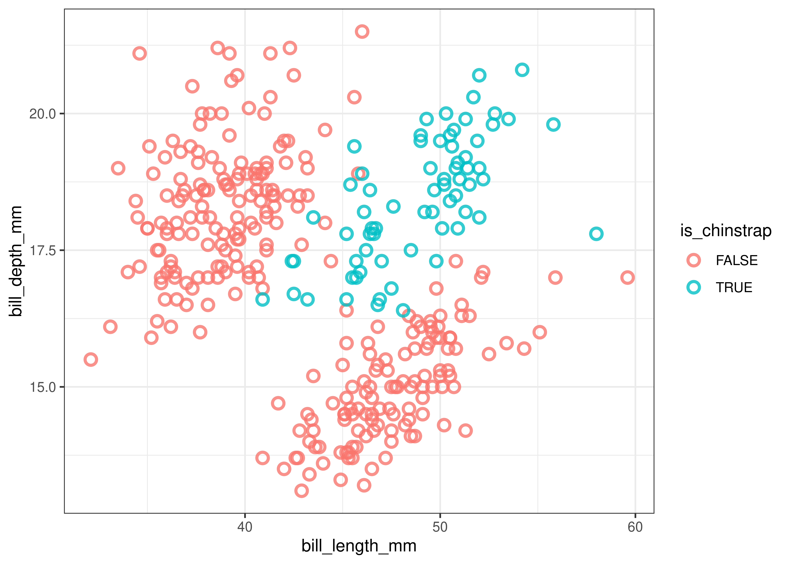
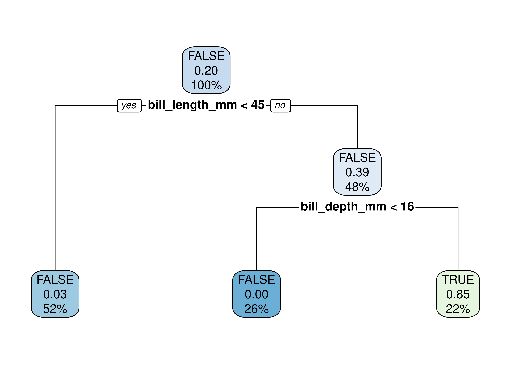
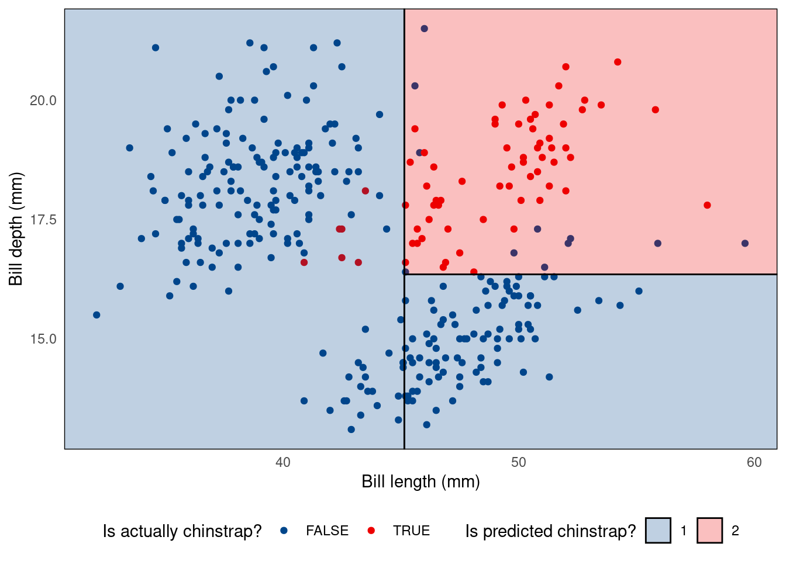
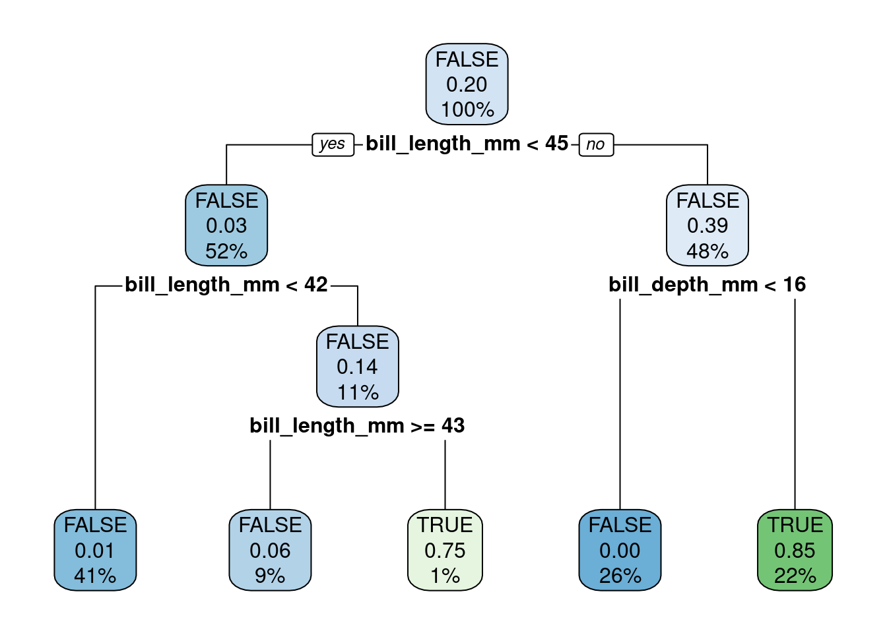

library('e1071')
library('ggsci')
library('ISLR2')
library('palmerpenguins')
library('parttree')
library('rpart')
library('rpart.plot')
library('tidyverse')💻 Week 07 - Lab Roadmap (90 min)
DS202 - Data Science for Social Scientists
📥 Download the RMarkdown version of this roadmap from Moodle.
This lab session draws on 🗓️ Week 05 lecture content and on feedback given by the course representatives about the main struggles you are facing with R (tidyverse).
If you are already very familiar with tidyverse, you can skip to Step 2.
R packages you will need:
You might have already installed some of these packages. Some were used in 🗓️ Week 05 slides, others in previous labs. If you see an error like “package not found”, then install the package using install.packages("<package name>").
Installation instructions for
parttree
The package parttree cannot be installed by install.packages. Instead, we have to follow the instructions set by the developers of the package:
install.packages("remotes")
remotes::install_github("grantmcdermott/parttree", force = TRUE)Step 1: A tidyverse recap (40 mins)
(the lab we wish we had run in the first weeks of this course!)
Step 1.1: The tibble (5 min)
So far, we have been working with data frames. We will introduce you to a different kind of data frame called a tibble. Tibbles are like data frames, only they have a more descriptive print function, and you can perform more advanced tasks like looping over lists (without needing to specify a for loop).
Let’s start by converting our now familiar Boston data to a tibble using as_tibble:
boston <- as_tibble(Boston)
bostonInstead of printing a lot of rows, we only get to see the first ten rows.
We can also see the dimensions of the data 506 x 13 and the class of each variable.
So with one command, we can get a lot more useful information on our data without the need for multiple commands.
Step 1.2: Basic dplyr verbs (10 minutes)
In previous labs, we have been using base R to subset data based on the rows and columns, to create new variables, and to create summary statistics. However, there is a more verbal way of performing these tasks using the tidyverse. We will introduce you to several key verbs, namely filter, select, mutate and summarise.
Auto cylinders
Suppose we wanted to select only the rows of the Auto data for cars with 4 cylinders. We can achieve this using the following base R command:
Auto[Auto$cylinders == 4, ]Now here is the tidyverse solution using filter.
filter(Auto, cylinders == 4)Boston columns
Next, let’s only include lstat and medv from Boston:
Boston[, c('medv','lstat')]Now here is the tidyverse solution using select:
select(Boston, medv, lstat)Carseats median sales
Now that we can subset variables, let’s create some new ones. Let’s create a dummy variable SalesGTMedian for each car seat in Carseats:
Carseats$SalesGTMedian <- if_else(Carseats$Sales > median(Carseats$Sales), TRUE, FALSE)Now here is the tidyverse solution using mutate:
mutate(Carseats, SalesGTMedian = if_else(Sales > median(Sales), TRUE, FALSE))Missing data in the Hitters dataset
Finally, suppose we wanted to find the average Salary in Hitters (a basketball data set). We specify na.rm = TRUE to get R to ignore all the missing values.
mean(Hitters$Salary, na.rm = TRUE)Now here is the tidyverse solution using summarise.
summarise(Hitters, mean_salary = mean(Salary, na.rm = TRUE))Categorical variables in Default dataset
Some of our variables will be categories, so let’s find out the distribution of defaults in Default:
table(Default$default)Now here is the tidyverse solution using count:
count(Default, default)💡 REFLECTION TIME
Let’s pause for a minute to see the advantages of these commands:
the commands themselves give a better indication of what it is we are trying to do. This is highly advantageous when it comes to communicating our code with others.
when working with variables in data frames, we do not need to use
$. Instead, we can just reference the variable on its own, provided we pass the command the data frame.every time we use these verbs, a new data frame is created - meaning we can use the output to create ggplots!
Step 1.3 The pipe (10 minutes)
You may have seen %>% in some of our code. This is known as the pipe operator, and it enables us to chain together multiple verbs into one fluid sequence of steps. To get this quickly you can use ctrl+shift+m (for Windows users) or command+shift+m (for Mac users).
Suppose we want to find out what proportion of American cars had mpg above the global average. We can find this out by using the following sequence of commands:
Auto %>%
as_tibble() %>%
select(mpg, origin) %>%
mutate(mpg_gt_gavg = if_else(mpg > mean(mpg), TRUE, FALSE)) %>%
filter(origin == 1) %>%
summarise(prop_mpg_gt_gavg = mean(mpg_gt_gavg))# A tibble: 1 × 1
prop_mpg_gt_gavg
<dbl>
1 0.269Let’s walk through what we just did:
- We converted
Autoto a tibble. - We selected only the variables of interest
mpgandorigin. (If you are working with larger data sets, removing superfluous columns can be an advantage.) - We create a new variable
mpg_gt_gaveragewhich finds out whether an automobile has an MPG greater than the global average. - We filter all rows to only include American cars.
- We summarised the data calculate, which helped us find that only 27 percent of American-made cars had MPGs greater than the global average.
Tip
Think of the pipe as “take this data and do something with it”
How would I do this in base R?
Let’s look at how to recreate this using base R.
Auto_cleaned <- Auto[,c('mpg','origin')]
Auto_cleaned$mpg_gt_gavg <- if_else(Auto_cleaned$mpg > mean(Auto_cleaned$mpg), TRUE, FALSE)
Auto_cleaned <- Auto_cleaned[Auto_cleaned$origin == 1, ]
data.frame(prop_mpg_gt_gavg = mean(Auto_cleaned$mpg_gt_gavg)) prop_mpg_gt_gavg
1 0.2693878While this code is technically correct, notice a few things. We need to keep updating the same object to save our results. Our code is disjointed and difficult to understand. The final product is also less satisfactory: we needed to convert it from a vector to a data frame, which displays no information on the class of prop_mpg_gt_gavg. That is, perhaps, why R can appear so confusing for first-time learners.
Step 1.4 PRACTICE! (15 min)
Now let’s use some of these skills to classify Chinstrap penguins. This is data from the package palmerpenguins 1.
# Importing this library will make `penguins` data available
library(palmerpenguins)
head(penguins)# A tibble: 6 × 8
species island bill_length_mm bill_depth_mm flipper_l…¹ body_…² sex year
<fct> <fct> <dbl> <dbl> <int> <int> <fct> <int>
1 Adelie Torgersen 39.1 18.7 181 3750 male 2007
2 Adelie Torgersen 39.5 17.4 186 3800 fema… 2007
3 Adelie Torgersen 40.3 18 195 3250 fema… 2007
4 Adelie Torgersen NA NA NA NA <NA> 2007
5 Adelie Torgersen 36.7 19.3 193 3450 fema… 2007
6 Adelie Torgersen 39.3 20.6 190 3650 male 2007
# … with abbreviated variable names ¹flipper_length_mm, ²body_mass_g🎯 ACTION POINTS
Use the verbs you learned above to modify the original data set and create a new one, call it penguins_cleaned, according to the following steps:
- Remove any observations with missing data. 💡You can pipe
na.omit()into you sequence of commands to achieve this. - Next, create a binary variable, call it
chinstrapthat stores TRUE if the penguin is aChinstrap, FALSE otherwise. - Now, filter the dataset and keep only the following variables:
is_chinstrap(our outcome of interest)bill_length_mmbill_depth_mm
Can you do it without looking at the solution?
Click here to view the solution
penguins_cleaned <-
penguins %>%
na.omit() %>%
mutate(is_chinstrap = if_else(species == 'Chinstrap', TRUE, FALSE)) %>%
select(is_chinstrap, bill_length_mm, bill_depth_mm)If you did it right, you should be able to run the code below and get same plot as shown here in the page:
penguins_cleaned %>%
ggplot(aes(bill_length_mm, bill_depth_mm, colour=is_chinstrap)) +
geom_point(size=2.5, stroke=1.4, alpha=0.8, shape=21) +
# (Optional) customizing the plot
theme_bw()
We can see that Chinstrap penguins tend to have above average bill length and depth whereas the other two species of penguins tend to either have shallow yet long or deep yet short bills.
“What if I struggle to understand the pipe and these”verbs” above?“
The R for Data Science book is a great resource to learn more about the tidyverse. For more guided tips related to our course, check section Useful Links about tidyverse of the ✅ Week 06 - Checklist.
Step 2: Decision Tree model (50 mins)
Note that the data exhibited in the plot above is not linearly separable. A non-linear algorithm will thus be highly useful in this context. This is what we will explore in this and in the next two sections.
If you need to recap on non-linear algorithms, rewatch 👨🏫 Week 05 - Lecture or check the slides online.
Step 2.1: Train and visualise a Decision Tree (10 mins)
Since we know the data we are modelling has a nonlinear relationship, let’s train a Decision Tree to classify Chinstrap penguins. R does not come with Decision Trees installed, so we need to import it from a library. Here we will use the function rpart from the rpart package and rpart.plot from the rpart.plot package.
Here are a few things to know about the rpart function:
- The
rpartcommand is largely similar to other commands such aslmandglmin that the first parameter is a formula and the second is the data set. - We have to add
method = classto tell the algorithm that we are performing a classification task.
tree.model <- rpart(is_chinstrap ~ ., data = penguins_cleaned, method = 'class')
rpart.plot(tree.model)
🤝 WORKING TOGETHER In pairs, discuss what you see in the plot.
- What do each node represents?
- What are the numbers inside the nodes?
- What do the percentages represent?
The video below explains how to read the numbers inside the nodes of the decision tree
Alternative visualisation with parttree package
Alternatively, you could visualise a decision tree as a partition tree plot. For this, you will need to have the parttree package installed (check instructions at the top of the page).
ggplot() +
geom_point(data = penguins_cleaned,
aes(bill_length_mm, bill_depth_mm, colour = is_chinstrap)) +
geom_parttree(data = tree.model, aes(fill = factor(is_chinstrap)), alpha = 0.25) +
theme_minimal() +
theme(panel.grid = element_blank(),
legend.position = 'bottom') +
scale_colour_lancet() +
scale_fill_lancet() +
labs(x = 'Bill length (mm)', y = 'Bill depth (mm)',
colour = 'Is actually chinstrap?',
fill = 'Is predicted chinstrap?')Warning: Using the `size` aesthetic in this geom was deprecated in ggplot2 3.4.0.
ℹ Please use `linewidth` in the `default_aes` field and elsewhere instead.
Don’t understand what the code above does? You might want to read Chapter 3 of R for Data Science to review ggplot.
Step 2.2: Goodness-of-Fit of the Decision Tree (10 mins)
Let’s investigate how well our model fits the data. Let’s reuse the model we trained (tree.model) and predict the same samples we used to train it. To avoid modifying our original dataframe, let’s save the output of the prediction in an auxiliary df (plot_df):
plot_df <-
penguins_cleaned %>%
mutate(class_pred = predict(tree.model, newdata = ., type="class"),
correct = class_pred == is_chinstrap)
plot_df🤝 WORKING TOGETHER In pairs, discuss the following:
- Explain what you see in the output of the chunk of code above.
- What does the code above do?
Simple confusion matrix:
confusion_matrix <-
table(expected=plot_df$is_chinstrap, class_pred=plot_df$class_pred)
print(confusion_matrix)Nicer looking confusion matrix:
library(cvms)
plot_confusion_matrix(as_tibble(confusion_matrix),
target_col = "expected",
prediction_col = "class_pred",
# Customizing the plot
add_normalized = TRUE,
add_col_percentages = FALSE,
add_row_percentages = FALSE,
counts_col = "n",
)Step 2.3 Control the parameters! (15 min)
We can tweak how the tree is built by controlling for certain parameters of the algorithm. To take a look at all possible parameters you can control, open the R console, type the command below and hit ENTER:
?rpart.controlFor example, let’s reduce the minbucket parameter:
tree.model <- rpart(is_chinstrap ~ ., data = penguins_cleaned, method = 'class', control=list(minbucket=1))
rpart.plot(tree.model)
🤝 WORKING TOGETHER In pairs, discuss the following:
- Explain what is different in this model.
- Visualize the new tree using the
parttreepackage (reuse from Step 2.1)
Step 2.4 PRACTICE! (15 min)
🎯 ACTION POINTS
- Build new tree models, this time trying out different control parameters.
- Which parameters led to different trees?
- Which parameters change the tree the most?
🔜 Next week, we will continue our journey of supervised learning by exploring the Support Vector Machine algorithm. We will also visit once again the topic of resampling (cross-validation) to select the optimal parameters for classifiers and regressors.
🏠 Take-home exercises
The following exercises were designed as natural extension of the concepts you learned about in this lab session. Reserve some time later to solve this at home, we will release solutions at the end of the week after everyone has had a chance to attend a lab session.
Q1: Selecting columns
Using the Bikeshare data set present in ISLR2 subset the data to only include mnth, holiday, and bikers columns.
# Your code goes hereQ2: A new tidyverse verb
Using the Bikeshare data set present in ISLR2, replicate Step 1.3, only this time replace filter(origin == 1) with group_by(origin). How have the results changed?
# Your code goes hereYour text goes here
Q3: Exploratory Data Analysis (Part I)
Calculate the average daily number of bikers in March, in the Bikeshare data set.
# Your code goes hereQ4: Exploratory Data Analysis (Part II0
Do people bike more during holiday seasons?
# Your code goes hereYour text goes here
Q5: Back to penguins…
Let’s go back to the penguins data set. Create a new dataframe that omits missing values (NAs), remove the island and year columns but keep the rest of the dataset intact (don’t create new columns).
# Your code goes hereQ6. Predict Penguin species
Build a Decision Tree model to predict the species of penguins. Note that the outcome will not be a binary variable this time.
# Your code goes hereQ7. Control parameters
The decision tree algorithm we are using sets the cost complexity parameter (cp) by default as control = list(cp = 0.01). Build a new model with a smaller cp value, say control = list(cp = 0.001). Does this increase or reduce the complexity of the tree?
# Your code goes hereYour text goes here
Footnotes
Data were collected and made available by Dr. Kristen Gorman and the Palmer Station, ]Antarctica LTER](https://pallter.marine.rutgers.edu/), a member of the Long Term Ecological Research Network.↩︎